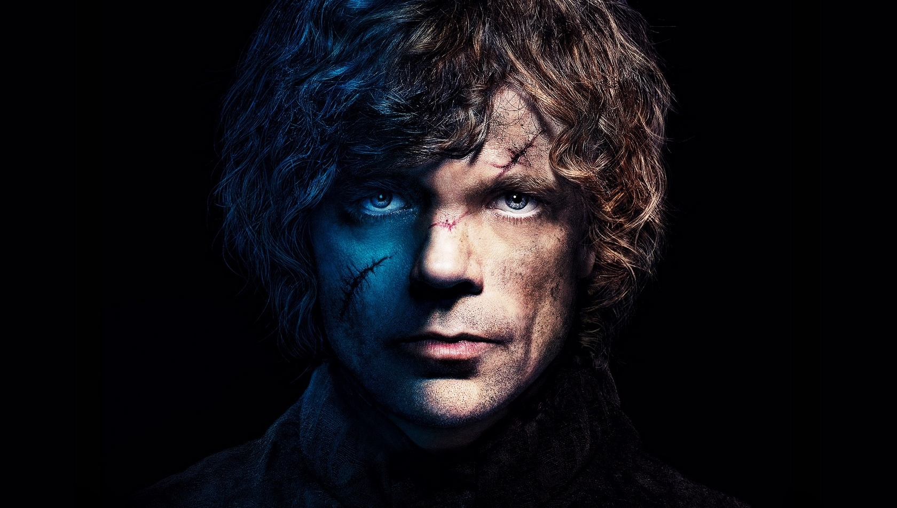

Тирион Ланнистер
Ти́рион Ла́ннистер (англ. Tyrion Lannister) — персонаж романов американского писателя-фантаста Джорджа Мартина из цикла «Песнь Льда и Пламени». Впервые появляется в книге «Игра престолов». Начиная с книги «Битва королей» (исключая «Пир стервятников», так как в этом романе он не появляется) является одним из ключевых персонажей цикла. В телесериале «Игра престолов» роль Тириона Ланнистера исполнил Питер Динклэйдж. Мой самый любимый персонаж , ну если не считать Короля Ночи.За роль Тириона Ланнистера в сериале «Игра престолов» Динклэйдж был удостоен трёх премий «Эмми» в номинации «Лучшая мужская роль второго плана в драматическом телесериале» (2011, 2015, 2018) и премии «Золотой глобус» в номинации «Лучшая мужская роль второго плана.
Внешний вид
В начале повествования «Игры престолов» Тириону Ланнистеру около 23 лет. Тирион — карлик, с глазами разного цвета (чёрный и зелёный), и пегими волосами (светлыми и тёмными). В битве на Черноводной Тирион потерял часть носа, а так же получил огромный шрам на лице, что сделало его ещё более уродливым.
Тирион Ланнистер, самый младший из детей лорда Тайвина и, бесспорно, самый уродливый. Тириону не досталось ничего из того, что боги уделили Серсее и Джейме. Карлик, едва ли не по пояс своему брату, он с трудом поспевал за ним на коротких ногах. Голова его была слишком велика для тела, под выпуклым лбом открывалось расплывшееся лицо уродца. Из-под прямых волос, светлых настолько, что они казались белыми, глядел зелёный глаз, рядом с ним поблёскивал чёрный. — «Игра престолов»
Личность
Юность Тириона Ланнистера была тяжёлой. Он не снискал любви отца, поскольку его рождение стоило жизни его матери. Единственным относительно близким человеком для него был брат Джейме. В возрасте 13 лет «женился» на простолюдинке по имени Тиша, которая, как рассказал ему Джейме, была проституткой, снятой им специально для карлика, чтобы тот наконец стал мужчиной. Этот «брак» пришёлся не по нраву лорду Тайвину, и он крайне жестоко обошёлся с сыном: по его приказу, каждый из гвардейцев изнасиловал девушку на глазах Тириона. Этот эпизод стал серьёзной психологической травмой для Тириона и оказал существенное влияние на его последующую жизнь.
Роль в сюжете «Игра престолов»
Сопровождал Роберта Баратеона и его супругу в Винтерфелл, откуда затем отправился на Стену, где был принят как почётный гость. По пути в Королевскую Гавань был схвачен леди Кейтилин Старк по необоснованному обвинению в организации покушения на жизнь её сына Брана и перевезён в замок Орлиное Гнездо, где Лиза Аррен, в свою очередь, обвинила его в отравлении своего мужа Джона Аррена. Некоторое время содержался в воздушной темнице Орлиного Гнезда.
Благодаря испытанию поединком, в котором его боец, наёмник Бронн, победил, был признан невиновным и отпущен. В горах долины Аррен Тирион едва не погиб от рук дикарей-горцев, однако благодаря своим недюжинным дипломатическим и ораторским способностям склонил их на свою сторону. Принимал участие в сражении на Зелёном Зубце во главе отряда горцев.
Битва королей
После пленения Джейме Ланнистера был назначен десницей (первым советником) короля Джоффри Баратеона и отбыл в столицу, где энергично взялся за выполнение своих обязанностей, в частности, за смену ставленников своей сестры Серсеи на верных ему людей. Разработал стратегический план битвы на Черноводной и участвовал в ней, продемонстрировав немалую храбрость. Был тяжело ранен сиром Мендоном Муром из Королевской Гвардии (возможно, по приказу Серсеи), однако остался жив, хоть и потерял половину носа.
Буря мечей
По возвращении Тайвина Ланнистера в столицу сложил с себя полномочия десницы короля. По воле отца женился на Сансе Старк, однако их брак фактически не состоялся. После смерти короля Джоффри на свадебном пиру был необоснованно обвинён в его отравлении своей сестрой Серсеей и заточён в темницу. Потребовал испытания поединком, однако его боец Оберин Мартелл проиграл бой сиру Григору Клигану и погиб, в связи с чем Тирион был приговорён к смертной казни. Был вызволен из темницы Джейме Ланнистером и лордом Варисом, после чего, пробравшись в покои своего отца, застрелил его из арбалета и бежал на восток, в Вольные города.
Танец с драконами
Прибыв в Эссос, он попадает в дом к влиятельному магистру Пентоса — Иллирио Мопатису. Как выясняется далее, Иллирио находится в сговоре с Варисом и предположительно хочет восстановить династию Таргариенов в Вестеросе, однако его реальные мотивы неизвестны. Таким образом Тириону отведена роль помочь Дейнерис взойти на престол, и Ланнистер отправляется на восток, взяв при этом имя Хугор Хилл. По пути на реке Ройн он узнает в сыне наемника, который должен доставить Тириона в Волантис, уже как 15 лет назад умершего Эйгона Таргариена, решившего жениться на Дейнерис ради получения драконов и успешного отвоевания Железного Трона. Тирион убеждает его, что это плохая идея, советуя ему уже сейчас отправиться в Вестерос, заявив о своих правах.
По прибытию в Волантис был похищен изгнанником Джорахом Мормонтом. В это же время Эйгон решает отправиться в Вестерос. Таким образом, Тирион ломает все планы Иллирио своим советом. По пути в Кварт вместе с Мормонтом подвергается нападению работорговцев. У стен Миэрина куплен одним из Миэринских командующих в качестве скомороха, где Тирион с карлицей Пенни должен показывать смешные рыцарские бои на свинье.
Ветра зимы
На настоящий момент Тирион находится в эпицентре осады Миэрина, где вскоре должен произойти штурм города. Вместе с Джорахом Мормонтом состоит в рядах миэринских наёмников, которые пытаются перейти на сторону войск Дейенерис Таргариен.
По словам самого Джорджа Мартина, прототипом Тириона послужил английский король Ричард III; как признался автор, этот образ отчасти автобиографичен.